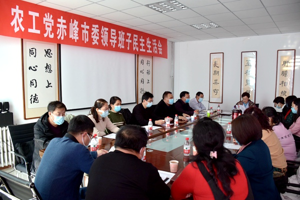

2020年12月20日，农工党赤峰市委会主委李艳茹主持召开农工党赤峰市委会2020年度领导班子民主生活会。
农工党赤峰市委会领导班子对开好这次民主生活会高度重视。会前，根据农工党赤峰市委会民主生活会制度规定并参照有关作法，认真检视问题，撰写发言材料，扎实做好相关准备工作。
会上，李艳茹代表农工党赤峰市委会班子作对照检查，并带头作个人检视剖析。班子成员分别结合各自学习情况、思想政治建设、组织建设、履职能力建设、作风建设、制度建设等方面的不足，开展批评与自我批评，深入剖析存在的问题和不足，并明确了相应的整改措施。 李艳茹在总结讲话中指出，农工党赤峰市委会领导班子及成员要把学习贯彻好中共十九届五中全会精神作为当前最重要的政治任务，深刻领会精神要义、重点把握内涵关系、切实掌握着力重点，重点围绕“十四五”规划落实和2035年远景目标实现以及“健康中国”“美丽中国”两条工作主线履行参政党职能；要旗帜鲜明讲政治，增强“四个意识”、坚定“四个自信”、做到“两个维护”，在农工党内蒙古区委会、中共赤峰市委的坚强领导和中共赤峰市委统战部的具体指导下履行职能、开展工作，确保农工党事业沿着正确政治方向前进；要扎实抓好问题整改，针对自我检视和民主生活会所提的问题，制定整改方案，明确整改目标、整改责任、完成时限，以整改落实的成效检验领导班子建设取得的成果；要保持永不懈怠的奋斗精神，发挥示范引领作用，自觉加强农工党赤峰市委会领导班子自身建设，为全市各级组织和广大党员树标杆、做表率，着力提升领导班子履职能力和工作整体水平，为赤峰市开创高质量发展新局面贡献农工党的力量。